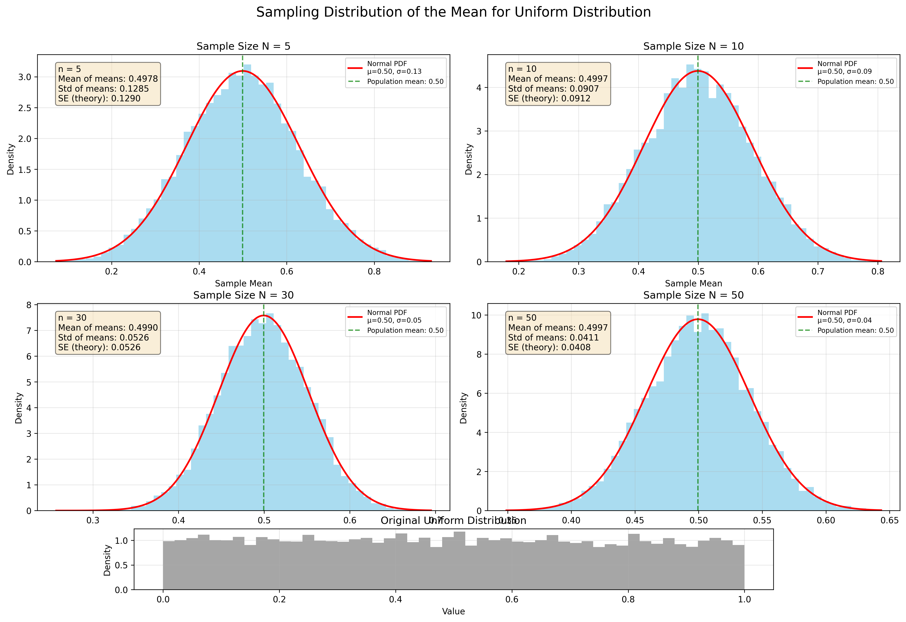
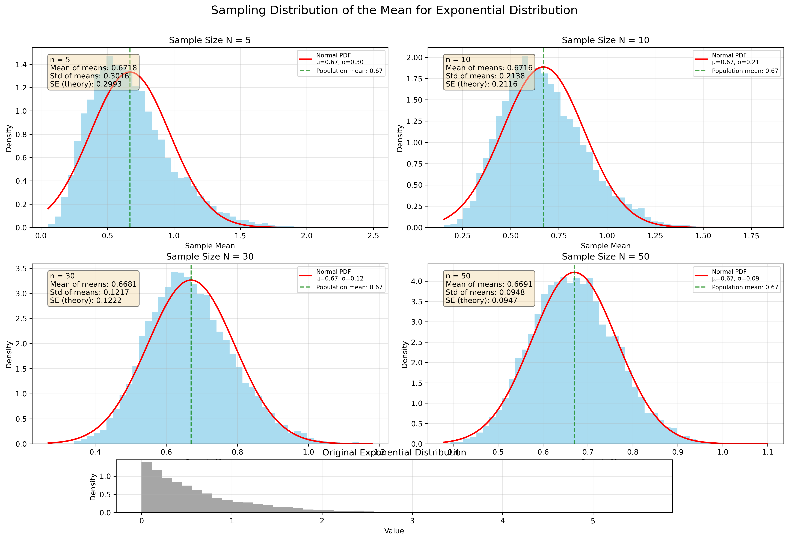
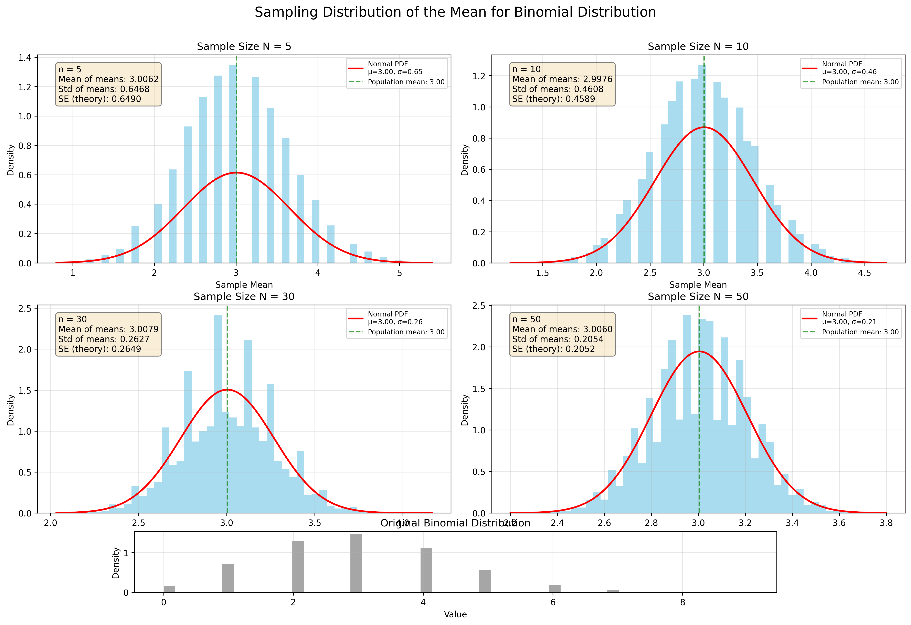

Problem 1: Exploring the Central Limit Theorem through Simulations
Motivation
The Central Limit Theorem (CLT) is a cornerstone of probability and statistics, stating that the sampling distribution of the sample mean approaches a normal distribution as the sample size increases, regardless of the population's original distribution. Simulations provide an intuitive and hands-on way to observe this phenomenon in action.
Task
- Simulating Sampling Distributions:
- Select several types of population distributions, such as:
- Uniform distribution
- Exponential distribution
- Binomial distribution
-
For each distribution, generate a large dataset representing the population.
-
Sampling and Visualization:
- Randomly sample data from the population and calculate the sample mean for different sample sizes (e.g., 5, 10, 30, 50).
- Repeat the process multiple times to create a sampling distribution of the sample mean.
-
Plot histograms of the sample means for each sample size and observe the convergence to a normal distribution.
-
Parameter Exploration:
- Investigate how the shape of the original distribution and the sample size influence the rate of convergence to normality.
-
Highlight the impact of the population's variance on the spread of the sampling distribution.
-
Practical Applications:
- Reflect on the importance of the CLT in real-world scenarios, such as:
- Estimating population parameters
- Quality control in manufacturing
- Predicting outcomes in financial models
Results and Analysis
Uniform Distribution
The uniform distribution is a continuous probability distribution where all values within a range are equally likely. Our simulation shows how the sampling distribution of means from a uniform distribution approaches normality:

As the sample size increases from 5 to 50, we observe: - The sampling distribution becomes increasingly bell-shaped - The variance of the sampling distribution decreases - By n=30, the distribution closely resembles a normal distribution
Exponential Distribution
The exponential distribution is strongly right-skewed. Despite this asymmetry in the original population:

We observe: - Even with sample size n=5, the sampling distribution is less skewed than the original population - By n=30, the distribution appears nearly normal - The convergence to normality is somewhat slower than with the uniform distribution
Binomial Distribution
The binomial distribution is a discrete probability distribution representing the number of successes in a fixed number of independent trials:

Our observations include: - The discrete nature of the original distribution is apparent with small sample sizes - As sample size increases, the sampling distribution becomes more continuous - The normal approximation is excellent by n=30
Impact of Population Variance
Our simulations demonstrate that while the shape of the sampling distribution approaches normality regardless of the original distribution, the variance of the sampling distribution depends on: 1. The variance of the original population 2. The sample size (n)
The relationship follows the standard error formula: σ_x̄ = σ/√n, where σ is the population standard deviation and n is the sample size.
Applications of the Central Limit Theorem
The CLT has numerous practical applications:
-
Statistical Inference: The CLT enables us to make inferences about population parameters using sample statistics, which is fundamental in hypothesis testing and confidence interval estimation.
-
Quality Control: In manufacturing, the CLT allows quality engineers to model measurement variations and establish control limits.
-
Financial Risk Assessment: Financial analysts use the CLT to model portfolio returns and assess investment risks.
-
Public Health: Researchers apply the CLT when analyzing health data from sample populations to draw conclusions about broader populations.
-
Physics: In statistical mechanics and thermodynamics, the CLT explains why many physical phenomena follow normal distributions.
Conclusion
Our simulations confirm the remarkable universality of the Central Limit Theorem across different probability distributions. As sample size increases, the sampling distribution of the mean: - Approaches a normal distribution regardless of the shape of the original population - Has a mean equal to the population mean - Has a variance that decreases in proportion to the sample size
This powerful theorem provides the theoretical foundation for many statistical methods and has wide-ranging applications across multiple fields of science, engineering, and social sciences.
Deliverables
- A Markdown document (
docs/1 Physics/6 Statistics/Problem_1.md) detailing our approach, presenting the generated plots, and discussing observations. - Python code (
src/clt_simulation.py) used to perform the simulations and generate the plots. - Generated plot images in the
docs/1 Physics/6 Statistics/pics/directory.